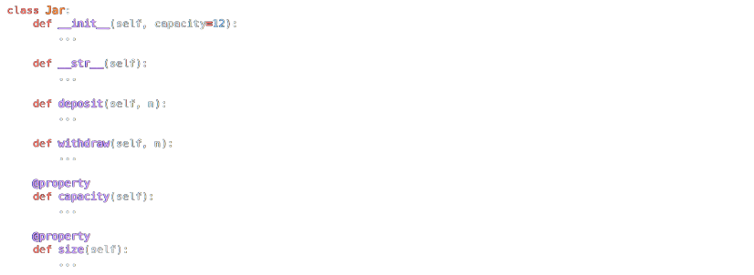

Suppose that you’d like to implement a cookie jar in which to store cookies. In a file called jar.py, implement a class called Jar with these methods:
__init__ should initialize a cookie jar with the given capacity, which represents the maximum number of cookies that can fit in the cookie jar. If capacity is not a non-negative int, though, __init__ should instead raise a ValueError.
__str__ should return a str with 🍪, where is the number of cookies in the cookie jar. For instance, if there are 3 cookies in the cookie jar, then str should return "🍪🍪🍪"
deposit should add n cookies to the cookie jar. If adding that many would exceed the cookie jar’s capacity, though, deposit should instead raise a ValueError.
withdraw should remove n cookies from the cookie jar. Nom nom nom. If there aren’t that many cookies in the cookie jar, though, withdraw should instead raise a ValueError.
capacity should return the cookie jar’s capacity.
size should return the number of cookies actually in the cookie jar, initially 0.

Structure your class per the below. You may not alter these methods’ parameters, but you may add your own methods.How to Test
Open your test_jar.py file and import your Jar class with from jar import Jar. Create a function called test_init, wherein you create a new instance of Jar with jar = Jar(). assert that this jar has the capacity it should, then run your tests with pytest test_jar.py.
Add another function to your test_jar.py file called test_str. In test_str, create a new instance of your Jar class and deposit a few cookies. assert that str(jar) prints out as many cookies as have been deposited, then run your tests with pytest test_jar.py.
Run your program with python lines.py non_existent_file.py. Assuming non_existent_file.py doesn’t exist, your program should exit with sys.exit and provide an error message:
Add another function to your test_jar.py file called test_deposit. In test_deposit, create a new instance of your Jar class and deposit a few cookies. assert that the jar’s size attribute is as large as the number of cookies that have been deposited. Also assert that, if you deposit more than the jar’s capacity, deposit should raise a ValueError. Run your tests with pytest test_jar.py.
Add another function to your test_jar.py file called test_withdraw. In test_withdraw, create a new instance of your Jar class and first deposit a few cookies. assert that withdrawing from the jar leaves the appropriate number of cookies in the jar’s size attribute. Also assert that, if you withdraw more than the jar’s size, withdraw should raise a ValueError. Run your tests with pytest test_jar.py.
You can execute the below to check your code using the code below, but be sure to test it yourself as well!
Check/python/week7/jarGreen smilies mean your program has passed a test! Red frownies will indicate your program output something unexpected. Goodluck 😊